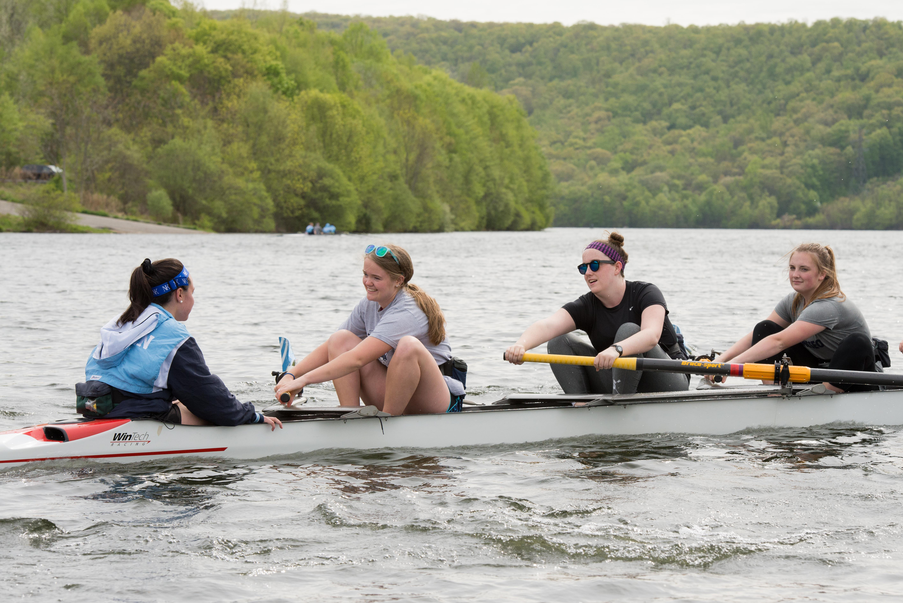
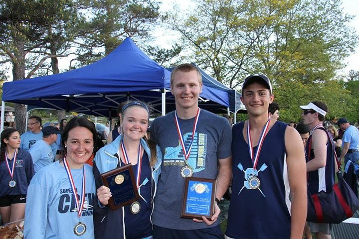
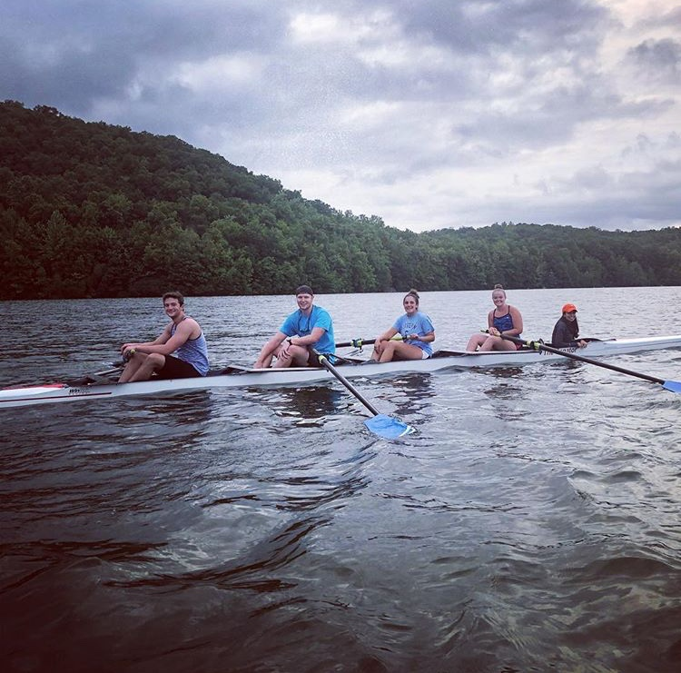
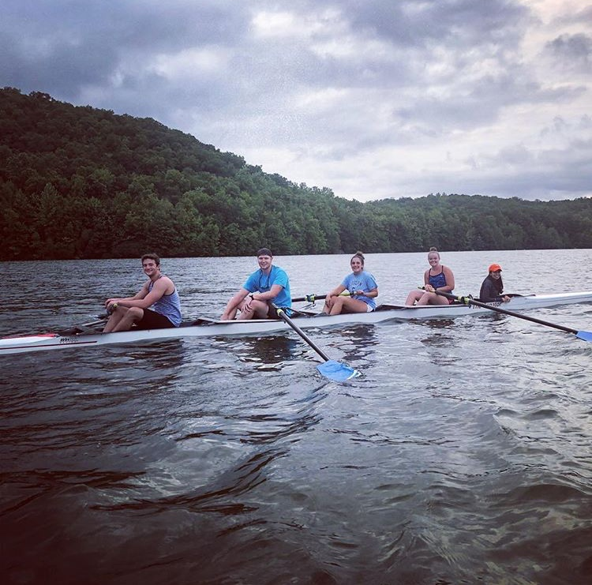

 
My freshman year of high school I joined the Suffern Crew team. I made varsity as a freshman and continued to row practically year round for the next four years. I met almost all of my best friends through crew and we loved it. Me, my boyfriend, my friend Victoria and our other good friend Jason even became captains together our senior year.
 
 
Beyond high school, I also rowed as part of Binghamton University's club rowing team where I was nominated novice team captain. I rowed there for a semester, but unfortunately had to give it up due to scheduling issues. While I can no longer row during the school year, my friends and I always make it a point to go out on the water and row over the summer.